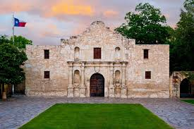

Welcome
Texas is nicknamed the "Lone Star State" for the single star on its flag, symbolic of its former status as an independent country, the Republic of Texas.
Top Attractions
- The Alamo 
- Texas Capitol
- The Dallas World Aquarium


Famous Local Food
Other popular items are Frito pie, kolaches, and various dishes featuring local ingredients like corn, chili peppers, and citrus.
Contact Information
For more information, visit: Texas Official Website
Email: info@texas-tourism.ph